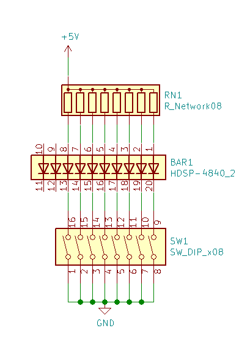
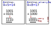
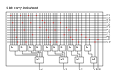
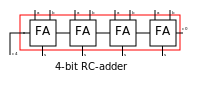
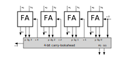

The Binary System
All computer we act with on a daily base do not know about the decimal system we are using, based on the ten digits at our hands.
All they know about are the states on and off. We build an imaginary circuit with a power source a control light - here an LED (Light Emitting Diode) - and a switch,
closing the connection let the light flash. An off light counts as zero, and on light counts as one. Simple as it.We switch the light on
and get a one.

Now we extend this installation with a second light and switch left to current one. We switch the left light on and the right on. What we get as a result is a '2'. Switching the right light on again gets us to 3. Like in our decimal system, the significance of the left light is higher (at least in our example), only the factor differs, instead of 10 the factor is 2. We denote the significance with 2^n where n is the position of the light. Every switch is a bit - more exactly the switch is the input and the LED is the output. So with four switches -half a byte - we can count from 0 to 15, while with eight switches - a byte - we can count from 0 to 255. This scheme can be extended as needed.
Binary |
Hex |
unsigned Interpretation |
0000 |
00 |
0 |
0001 |
01 |
1 |
0010 |
02 |
2 |
0011 |
03 |
3 |
0100 |
04 |
4 |
0101 |
05 |
5 |
0110 |
06 |
6 |
0111 |
07 |
7 |
1000 |
08 |
8 |
1001 |
09 |
9 |
1010 |
0A |
10 |
1011 |
0B |
11 |
1100 |
0C |
12 |
1101 |
0D |
13 |
1110 |
0E |
14 |
1111 |
0F |
15 |
.")
A simple Ripple-Carry adder
Let us do some simple calculations with the goal to derive the necessary logic for an adder-unit. The addition is done like learned in elementary school, just that this time we add binary numbers. The first example works while the second one producesa carry flag besides the (wrong) result.

Scheme for combinatorial circuit
We develop the RC-adder circuit according to the following scheme, applied to evaluate combinatorial circuits
-
Define inputs and outputs
-
Construct truth table
-
Evaluate boolean equations / simplify
-
Draw optimized combinatorial circuit
| Truth table for fulladder cell | fulladder cell | ||||||||||||||||||||||||||||||||||||||||||||||||||||||
|---|---|---|---|---|---|---|---|---|---|---|---|---|---|---|---|---|---|---|---|---|---|---|---|---|---|---|---|---|---|---|---|---|---|---|---|---|---|---|---|---|---|---|---|---|---|---|---|---|---|---|---|---|---|---|---|
|
|
\[ \begin{aligned} s & = (\overline{c_{in}} \land \overline{A} \land B) \lor (\overline{c_{in}} \land A \land {\overline{B}}) \lor (c_{in} \land \overline{A} \land \overline{B}) \lor (c_{in} \land A \land B) \\ & = \overline{c_{in}}(\overline{A} \land \overline{B}) \lor (A \land \overline{B}) \lor c_{in}\overline{A} \land \overline{B}) \lor (A \land B \\ & = \overline{c_{in}}(A \oplus B) \lor c_{in}(\overline{A \oplus B}) \\ & = A \oplus B \oplus c_{in} \end{aligned} \]
\[ \begin{aligned} c_{out} & = \overline{c_{in}}(A \land B) \lor c_{in}(\overline{A} \land B) \lor c_{in}(A \land \overline{B}) \lor c_{in}(A \land B) \\ & = \overline{c_{in}}(\overline{A} \land \overline{B}) \lor (A \land \overline{B}) \lor c_{in}\overline{A} \land \overline{B}) \lor (A \land B \\ & = \overline{c_{in}}(A \land B) \lor c_{in}[(\overline{A} \land B) \lor (A\land \overline{B}) \lor A \land B] \\ & = \overline{c_{in}}AB \lor c_{in}(A \oplus B) \lor c_{in}AB \\ & = (\overline{c_{in}} \lor c_{in})AB \lor c_{in}(A\oplus B) \\ & = AB \lor c_{in}A \oplus B \end{aligned} \]
A simpler approach
Instead of the circuit of a fulladder cell, by only considering the both input signals without the carry, we evaluate the half-adder cell.
| A | B | c_out | sum | |
|---|---|---|---|---|
0 |
0 |
0 |
0 |
|
0 |
1 |
0 |
1 |
|
1 |
0 |
0 |
1 |
|
1 |
1 |
1 |
0 |
As we can see, the halfadder consists only of the two gates 'AND' and 'XOR'. Two halfadder and a separate 'OR'-gate for the carry-signal result in a fulladder.
\[ \begin{array}{c} c = x \land y \\ s = x \oplus y \end{array} \]
Carry-Lookahead Adder
To avoid the long delay for the carry signal in the rc-adder, the carry-Lookahead has been developed. The signals, (g)enerate and (p)ropagate are defined as follows (i being the index of the significance):
\[ \begin{array}{c} g_{i} = a_{i} \land b_{i} \\ p_{i} = a_{i} \lor b_{i} \end{array} \]
From these helper signals the next carry-value is calculated:
\[ c_{i+1} = g_{i} \lor c_{i} \land p_{i} \]
\[ \begin{aligned} c_{1} & = g_{0} \lor c_{0}p_{0} \\ c_{2} & = g_{1} \lor (g_{0} \lor c_{0}p_{0})p_{1} = g_{1} \lor g_{0}p_{1} \lor c_{0}p_{0})p_{1} \\ c_{3} & = g_{2} \lor c_{2}p_{2} = g_{2} \lor (g_{1} \lor g_{0}p_{1} \lor c_{0}p_{0}p_{1})p_{2} \\ & = g_{2} \lor g_{1}p_{2} \lor g_{0}p_{1}p_{2} \lor c_{0}p_{0}p_{1}p_{2} \\ c_{4} & = g_{3} \lor c_{3}p_{3} = g_{3} \lor (g_{2} \lor g_{1}p_{2} \lor g_{0}p_{1}p_{2} \lor c_{0}p_{0}p_{1}p_{2})p_{3} \\ & = g_{3} \lor g_{2}p_{3} \lor g_{1}p_{2}p_{3} \lor g_{0}p_{1}p_{2}p_{3} \lor c_{0}p_{0}p_{1}p_{2}p_{3} \\ \end{aligned} \]
Carry-Lookahead Adder circuit

As can be seen the circuit complexity increases with the significance. The table below shows the total view of these different adder implementations. Of course the topic of adders is much broader as displayed here, we only introduced the concepts.
Ripple-Carry Adder

Carry-Lookahead Adder

In the next blog post we will see, how to extend the range of numbers to the negative space.